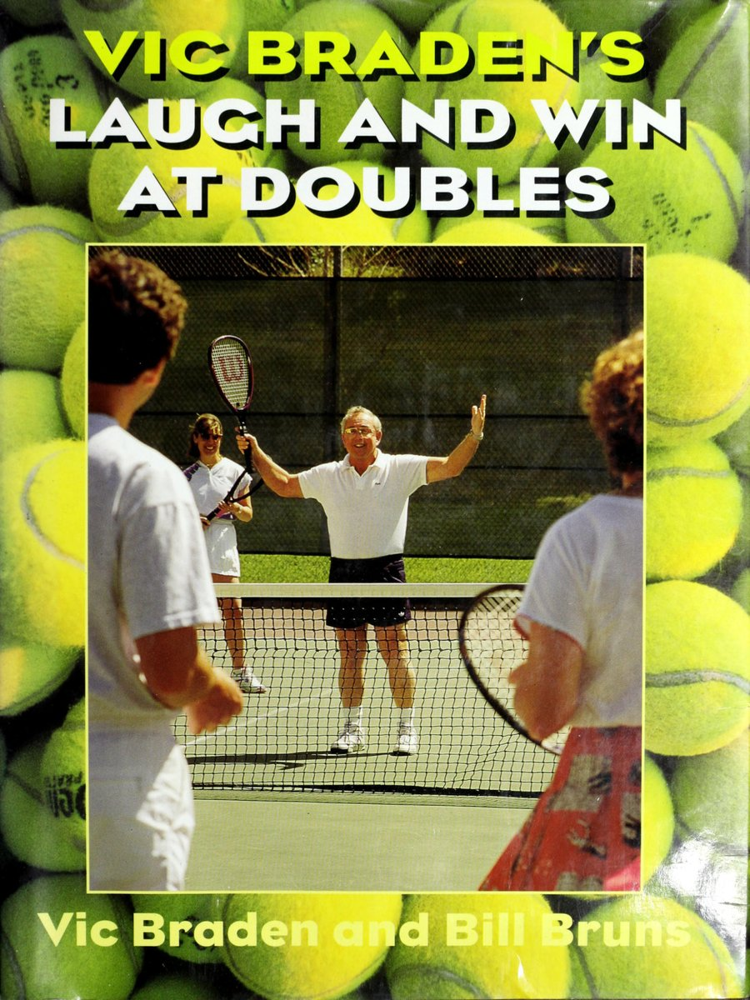
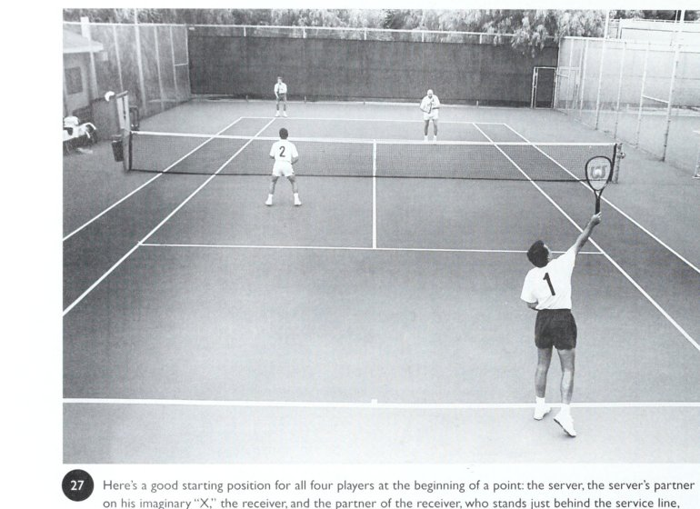
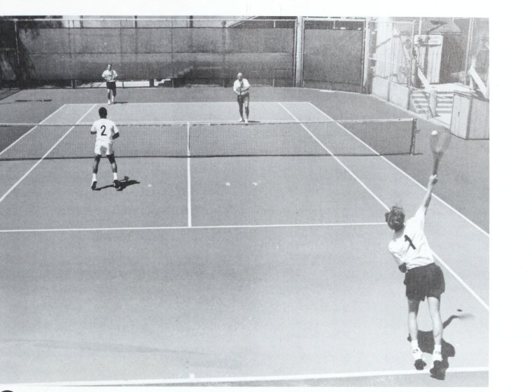
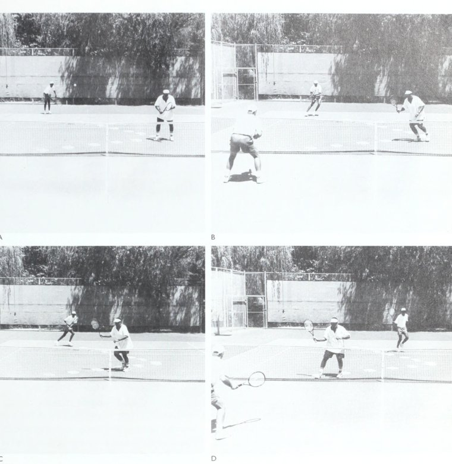
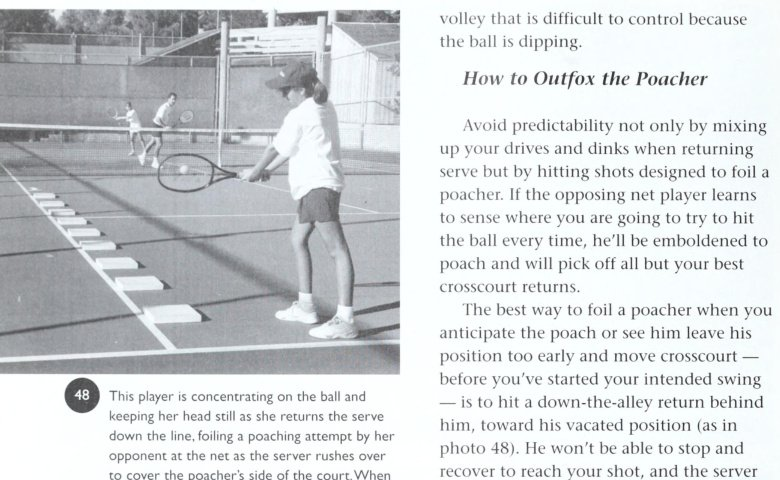
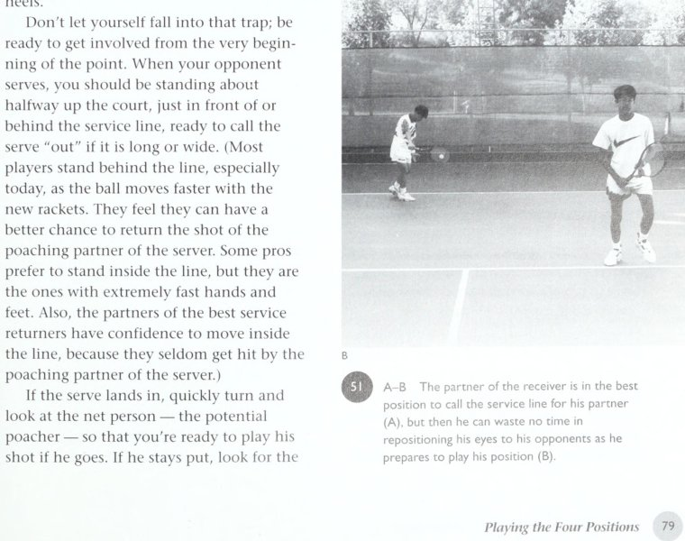

Tuyệt phẩm chiến thuật và tâm lý học đánh đôi đỉnh cao của huyền thoại Vic Braden
Lời Mở Đầu: Triết Lý "Cười Và Thắng" Của Vic Braden
Introduction: The "Laugh and Win" Philosophy
Nụ Cười: Liều Thuốc Thần Kỳ Giải Phóng Trực Giác Và Cơ Bắp
Hầu hết các tay vợt bước vào sân đấu đôi với khuôn mặt căng thẳng như thể họ sắp bước vào một phiên tòa sinh tử. Họ nghiến răng, gồng cứng hai cánh tay và tự trừng phạt bản thân sau mỗi cú đánh hỏng. Thực tế khoa học thể thao đã chứng minh rằng: Cơ bắp bị căng cứng là kẻ thù số một của sự chính xác và phản xạ thần kinh. Triết lý "Cười và Thắng" (Laugh and Win) không phải là sự đùa cợt thiếu nghiêm túc, mà là một phương pháp tâm lý học vận động đỉnh cao. Khi bạn mỉm cười, não bộ tiết ra các hợp chất giúp hạ nhịp tim, giải tỏa áp lực và đưa hệ cơ bắp về trạng thái thả lỏng linh hoạt tối ưu. Một nụ cười chân thành giữa hai bạn cặp sau một pha bóng hỏng có thể xóa tan ngay lập tức bóng ma tự ti, giúp cả hai tái thiết lập sự tự tin trong tích tắc.
Bản Chất Của Đánh Đôi: Sự Thấu Cảm Và Gắn Kết Năng Lượng
Đánh đôi là bộ môn nghệ thuật của sự tương tác xã hội thu nhỏ trên diện tích một sân quần vợt. Bạn không thể thi đấu xuất sắc nếu luôn giữ tâm lý vị kỷ hoặc xem bạn cặp như một người phụ tá cho những cú đánh của mình. Chiến thắng bền vững chỉ đến khi hai người tạo ra một trường năng lượng cộng hưởng tích cực. Niềm vui thi đấu cùng nhau chính là chất keo kết dính giúp đội đôi vượt qua những giai đoạn khủng hoảng phong độ, biến mỗi trận đấu trở thành một trải nghiệm thăng hoa đầy cảm xúc.
Chương 1: Những Yếu Tố Cốt Lõi Của Đánh Đôi Xuất Sắc
Chapter 1: The Essentials of Good Doubles
Ba Trụ Cột Kỹ Thuật: Giao Bóng Kiểm Soát, Trả Bóng Chắc Chắn Và Lưới Chủ Động
Nhiều người lầm tưởng rằng đánh đôi đòi hỏi những cú đánh có tốc độ khủng khiếp. Trong thực tế huấn luyện, các nhà vô địch đánh đôi vĩ đại đều dựa trên ba trụ cột kỹ thuật hết sức căn bản nhưng được rèn luyện đến độ hoàn hảo: Thứ nhất là quả giao bóng một có kiểm soát cao. Tỷ lệ giao bóng một vào sân phải đạt trên 70%. Tốc độ bóng chỉ là yếu tố thứ yếu so với độ xoáy (kick/slice) và điểm rơi ép đối phương vào thế khó, tạo điều kiện tối đa cho người đứng lưới bắt bài can thiệp. Thứ hai là cú trả giao bóng kiên định. Trong đánh đôi, cú trả giao bóng tốt nhất không phải là cú dứt điểm ăn điểm trực tiếp (winner), mà là một đường bóng thấp, sâu và cắm chéo sân xuống chân đối phương. Cú trả bóng thành công là cú đánh ép người giao bóng đối thủ phải đánh một quả volley phòng thủ hướng lên. Thứ ba là khả năng làm chủ không gian lưới. Đội nào chiếm lĩnh được khu vực cự ly gần lưới với tư thế sẵn sàng và đôi chân linh hoạt sẽ luôn nắm quyền kiểm soát số phận của điểm số.
Tránh Xa Bẫy Đánh Đơn Khi Đứng Trên Sân Đôi
Thói quen tệ hại nhất của các tay vợt chuyển từ đánh đơn sang đánh đôi là cố gắng tung ra những cú bung sức dạt biên từ cuối sân. Trên sân đôi, khoảng trống hai bên biên luôn có người đứng lưới đối phương đón lõng. Mỗi cú đánh bạt bóng thiếu kiểm soát là một lời mời chào đối thủ bắt volley kết liễu. Bạn phải học cách yêu thích những đường bóng đi vào trung lộ giữa hai đối thủ, nơi gây ra sự do dự, va chạm vợt và phá vỡ cấu trúc phòng thủ của đội bạn.
Chương 2: Lựa Chọn Bạn Cặp Phù Hợp & Bí Quyết Kiểu Não Bộ
Chapter 2: Choosing the Right Partner & Brain Types
Ứng Dụng Khoa Học Thần Kinh: Nhận Diện Kiểu Não Bộ (Brain Types)
Mỗi con người sinh ra đều có một cấu trúc não bộ chi phối cách họ tiếp nhận thông tin, phản ứng trước áp lực và đưa ra quyết định trên sân đấu. Hiểu được kiểu não bộ của chính mình và của bạn cặp là chìa khóa vàng để thiết lập sự hòa hợp tuyệt đối. Có những tay vợt thuộc nhóm "Não bộ Tư duy Logic" (Left-Brain Thinkers). Họ cần những chỉ dẫn chiến thuật cụ thể, phân tích tỷ lệ phần trăm và các bước thực hiện tuần tự. Ngược lại, những tay vợt thuộc nhóm "Não bộ Trực giác Cảm xúc" (Right-Brain Feelers) lại thi đấu dựa trên cảm hứng, nhịp điệu và hình ảnh thị giác. Nếu một tay vợt lý trí cặp với một tay vợt cảm tính, xung đột rất dễ bùng nổ nếu hai bên không thấu hiểu sự khác biệt này. Hãy chấp nhận bản sắc tự nhiên của đồng đội, nói chuyện bằng ngôn ngữ mà não bộ họ dễ tiếp thu nhất và hỗ trợ vào những điểm khuyết của nhau.
Tìm Kiếm Sự Bù Trừ: Kỹ Năng Và Phong Cách Thi Đấu
Một cặp đôi vô địch hiếm khi là hai bản sao y hệt nhau. Sự kết hợp hoàn hảo nhất luôn đến từ nguyên lý bù trừ: Một tay vợt có lối chơi bốc lửa, giàu sức mạnh trên lưới nên kết hợp cùng một người đồng đội điềm đạm, có cú đánh bóng cuối sân bền bỉ và chắc chắn. Một tay vợt thuận tay phải khi kết hợp cùng một tay vợt thuận tay trái sẽ tạo ra những góc đánh vô cùng hiểm hóc, khiến đối phương liên tục bị rối loạn trong việc xác định điểm rơi và độ xoáy bóng.
Chương 3: Quyết Định Phối Hợp Ban Đầu & Khâu Chuẩn Bị
Chapter 3: Early Teamwork Decisions and Preparations
Xây Dựng Kế Hoạch Tác Chiến Trước Khi Trận Đấu Bắt Đầu
Đừng bao giờ bước vào sân mà không có sự chuẩn bị kỹ lưỡng cùng bạn cặp. Trong phần khởi động trước trận, hãy dành thời gian quan sát cẩn thận đối thủ bên kia lưới: Ai là người có cú trái tay yếu hơn? Ai là người lười di chuyển trên lưới? Ai là người dễ bị mất bình tĩnh khi bị lốp bóng qua đầu? Thống nhất rõ ràng về phân chia ô sân thi đấu: Người có quả trả bóng ổn định đứng ô Deuce để mở màn game, trong khi người có quả giao bóng và dứt điểm uy lực đứng ô Ad để xử lý các điểm số sinh tử.
Nghi Thức Đồng Đội: Lời Thề Bất Khả Xâm Phạm
Trước khi trọng tài cho trận đấu bắt đầu, hai bạn hãy cam kết với nhau một nguyên tắc bất biến: Dù bất kỳ tình huống nào xảy ra, dù thắng giòn giã hay đang bị dẫn sâu, cả hai sẽ luôn sát cánh, không bao giờ chỉ trích và luôn dành cho nhau sự tôn trọng cao nhất. Lời cam kết tinh thần này giải phóng bạn cặp khỏi nỗi sợ hãi làm bạn thất vọng, cho phép họ vung vợt với sự thanh thoát và tự tin cao nhất trong từng điểm số then chốt.
Chương 4: Vị Trí Đứng Sân Khi Bắt Đầu Một Điểm Số
Chapter 4: Court Positions to Start a Point
Vị Trí Xuất Phát Chuẩn Xác Cho Cả Bốn Tay Vợt
Một điểm số trong đánh đôi bắt đầu từ việc chiếm lĩnh vị trí hình học tối ưu. Nếu bạn đứng sai vị trí ngay từ trước khi quả bóng được giao, bạn đã tự đặt mình vào thế rượt đuổi bị động: Người Giao Bóng (The Server): Đứng ở khoảng giữa mốc trung tâm (Center Mark) và đường biên đánh đơn. Vị trí này cho phép người giao bóng bao quát được cả hai góc giao bóng vào góc chữ T và góc mở rộng mang, đồng thời có lộ trình di chuyển dâng lên lưới thẳng và thuận lợi nhất. Bạn Cặp Người Giao Bóng: Đứng ở vị trí "Chữ X Tưởng Tượng" (The Imaginary X) trên ô sân đối diện. Điểm này nằm cách lưới khoảng 2 đến 2,5 mét, chính giữa khoảng cách từ đường biên đánh đơn đến vạch trung tâm. Đây là vị trí lý tưởng cho phép người đứng lưới vừa có thể bật sang poach cắt bóng, vừa kịp thời lui lại che chắn góc đánh dọc dây. Người Trả Giao Bóng: Căn chỉnh vị trí theo độ sâu và sức mạnh quả giao bóng của đối thủ, thường đứng gần vạch đáy sân và hơi lệch về phía tay thuận. Bạn Cặp Người Trả Giao Bóng: Đứng ở khu vực vạch giao bóng, cách vạch biên đánh đơn một khoảng an toàn, luôn trong tư thế sẵn sàng quan sát điểm rơi của quả giao bóng.

Sơ đồ Vị trí Xuất phát — Vị trí hình học chuẩn mực cho cả 4 tay vợt: Người giao bóng, người đứng lưới trên chữ X, người trả giao bóng và bạn cặp trên vạch giao bóng.
Đội Hình Tandem Và Trận Địa Đánh Đôi Biến Ảo
Bên cạnh đội hình truyền thống một người trên một người dưới, các cặp đôi có thể sử dụng đội hình Tandem (cả hai cùng đứng trên lưới hoặc biến thể Trận địa Úc). Khi người đứng lưới di chuyển sang cùng phía với người giao bóng, cấu trúc Tandem này lập tức khóa chặt góc trả bóng chéo sân quen thuộc của đối phương. Tuy nhiên, đội hình Tandem đòi hỏi người giao bóng phải có cú giao bóng đủ uy lực và người đứng lưới phải cực kỳ nhanh nhẹn để không bị đối phương trừng phạt bằng cú trả bóng dọc dây vào khoảng sân trống.

Sơ đồ Đội hình Tandem — Người đứng lưới thiết lập cự ly chủ động trên lưới, phối hợp cùng người giao bóng để bẻ gãy nhịp trả bóng thông thường của đối thủ.
Chương 5: Thi Đấu Ở Bốn Vị Trí Trên Sân Đôi
Chapter 5: Playing the Four Positions
Kỷ Luật Của Người Đứng Lưới Phía Giao Bóng: Không Lộ Ý Đồ Quá Sớm
Sai lầm chết người của người đứng lưới khi có ý định bắt bóng (poach) là di chuyển quá sớm. Nếu bạn nhấp chân hoặc lao sang ô giữa sân trước khi đối phương chạm bóng, bạn đang gửi một tín hiệu lộ liễu (telegraph) cho người trả bóng. Đối thủ tỉnh táo sẽ lập tức đổi hướng đánh bóng dọc theo đường biên dọc mà bạn vừa bỏ trống. Người đứng lưới phải giữ nguyên tư thế vững chãi, kiên nhẫn đợi cho đến khi người trả bóng bắt đầu hạ vợt chuẩn bị tiếp xúc bóng mới bùng nổ lao chéo cắt mặt lưới.

Sơ đồ Phá Bẫy Bắt Lưới — Người trả giao bóng tập trung giữ đầu cố định, nhận diện ý đồ poach quá sớm của đối thủ để tung cú trả bóng dọc dây chuẩn xác.
Nguyên Tắc Hoán Đổi Vị Trí Mượt Mà (Switching Movement)
Khi người đứng lưới thực hiện một pha poach cắt bóng sang phần sân bên kia, cấu trúc ban đầu của đội đã thay đổi. Người giao bóng phía sau phải lập tức nhận biết chuyển động này để di chuyển chéo sang trám vào khoảng trống mà đồng đội vừa để lại. Sự hoán đổi mượt mà này đảm bảo sân đấu luôn được bảo vệ kín kẽ. Hai người phải phối hợp nhịp nhàng như hai con lắc đồng hồ: Một người sang trái thì người kia tự động lấp sang phải, không bao giờ để xảy ra tình trạng cả hai người cùng dồn về một nửa sân.

Sơ đồ Hoán Đổi Vị Trí — Khi người đứng lưới di chuyển chéo sân can thiệp, người giao bóng phía sau lập tức bọc lót sang phần sân trống đối diện.
Tư Thế Sẵn Sàng Và Tái Định Vị Tầm Mắt Của Người Đứng Lưới
Không có một tư thế sẵn sàng duy nhất nào phù hợp cho tất cả mọi người. Tư thế sẵn sàng tốt nhất là tư thế mang lại cho bạn sự thoải mái, trọng tâm hơi hạ thấp và gót chân hơi nhón để phản xạ bùng nổ trong mọi hướng. Điều tối quan trọng đối với người đứng lưới của bên trả bóng là kỹ thuật điều chuyển tầm mắt: Ban đầu, bạn nhìn về vạch giao bóng để hỗ trợ bạn cặp xác định bóng vào hay ra. Nhưng ngay khoảnh khắc bóng chạm đất trong ô giao bóng, bạn phải lập tức chuyển toàn bộ tầm mắt về phía người đứng lưới đối phương để sẵn sàng ứng phó với bất kỳ pha can thiệp nào.

Sơ đồ Kỹ Thuật Tầm Mắt — Người đứng lưới kiểm tra điểm rơi giao bóng rồi lập tức tái định vị tầm mắt vào đối thủ trên lưới để chuẩn bị phản xạ.
Chương 6: Lối Chơi Đồng Đội & Chiến Thuật Đánh Đôi Toàn Diện
Chapter 6: Teamwork and Strategy
Ba Đội Hình Tác Chiến Cơ Bản: Hai Trên Lưới, Một Lên Một Xuống, Hai Cuối Sân
Một đội đôi xuất sắc phải làm chủ và linh hoạt vận dụng cả ba cấu trúc đội hình cơ bản trên sân: Đội Hình Hai Người Trên Lưới (Both Up at the Net): Đây là đội hình tấn công tối thượng trong đánh đôi hiện đại. Khi cả hai tay vợt cùng chiếm lĩnh khu vực lưới, góc đánh của đối phương bị thu hẹp lại tối đa và thời gian phản ứng của họ bị tước đoạt gần như hoàn toàn. Hai người trên lưới phải di chuyển song song, khép chặt trung lộ và ép đối phương vào những đường bóng khó. Đội Hình Một Lên Một Xuống (One Up, One Back): Đội hình truyền thống phổ biến nhất khi bắt đầu một điểm số. Người đứng sau giữ nhịp giằng co chéo sân, trong khi người đứng trước săn tìm cơ hội cắt bóng. Chìa khóa của đội hình này là người cuối sân phải liên tục tìm cơ hội dâng lên lưới để hoàn tất cấu trúc tấn công hai người. Đội Hình Hai Người Cuối Sân (Both Back): Thường được sử dụng như một phương án phòng thủ chiến lược khi đối phương giao bóng quá sấm sét hoặc có khả năng bắt lưới quá áp đảo. Đội hình này biến trận đấu thành cuộc chiến giằng co từ vạch đáy sân, sử dụng những cú lốp bổng sâu để đẩy lùi đối thủ ra xa khỏi lưới.
Hóa Giải Các Cặp Đôi Chuyên Lốp Bóng ("Lob Queens")
Trong quần vợt phong trào và bán chuyên, bạn sẽ thường xuyên đối đầu với những cặp đôi chỉ sử dụng một chiến thuật duy nhất: Lốp bóng liên tục lên trời để ru ngủ và khiến bạn mất kiên nhẫn. Để hóa giải chiến thuật khó chịu này, quy tắc số một là: Tuyệt đối không được nổi nóng hay vội vàng tung cú smash tất tay từ vị trí quá sâu phía sau vạch giao bóng. Hãy bình tĩnh lùi một bước, để bóng nảy xuống sân rồi tung ra cú đánh sâu có độ xoáy cuộn cắm vào góc yếu của đối phương. Khi đối thủ tung ra một quả lốp non ở cự ly gần lưới, đó mới là thời điểm bạn vung vợt dứt điểm kết liễu điểm số.
Chương 7: Các Cú Đánh Cá Nhân Then Chốt Trong Đánh Đôi
Chapter 7: Key Individual Shots in Doubles
Cơ Học Cú Volley: Điểm Tiếp Xúc Phía Trước Và Không Vung Vợt Quá Đà
Cú volley trong đánh đôi hoàn toàn khác với cú đánh bóng nảy cuối sân. Rất nhiều tay vợt mắc lỗi "vung vợt lấy đà" (backswing) quá rộng như thể họ đang chuẩn bị đánh một cú thuận tay cuối sân. Trên lưới, thời gian không cho phép bạn làm điều đó. Một cú volley chuẩn mực đòi hỏi mặt vợt phải luôn được giữ ở phía trước tầm nhìn của mắt. Bạn không vung vợt về phía sau, mà sử dụng chuyển động bước chân tiến tới kết hợp với cú đẩy vợt ngắn, chắc cổ tay để đè bóng. Hãy tưởng tượng bạn đang dùng mặt vợt như một tấm khiên vững chắc chặn lấy đường bóng bay của đối thủ.
Cú Đập Smash Overhead Và Cú Lốp Bóng Tấn Công Topspin Lob
Cú đập smash trên cao (Overhead Smash) là phát súng ân huệ để kết liễu điểm số. Khi nhìn thấy bóng bổng, hãy lập tức quay nghiêng người, chỉ tay trái lên quả bóng để đo khoảng cách và thực hiện bước trượt lùi (side-shuffle). Tuyệt đối không đập bóng khi trọng tâm đang ngả ngửa về phía sau. Ngược lại, cú lốp bóng xoáy cuộn (Topspin Lob) là một trong những cú đánh đẹp mắt và hiểm hóc nhất trong kho vũ khí của bạn. Bằng cách hạ đầu vợt xuống thấp rồi vuốt mạnh lên trên tạo độ xoáy topspin cực mạnh, bóng sẽ bay vọt qua đầu người đứng lưới đối phương rồi đột ngột cắm sập xuống trong sân, biến người phòng thủ thành kẻ chiến thắng ngoạn mục.
Chương 8: Bạn, Tâm Lý Học Và Bạn Cặp
Chapter 8: You, Psychology, and Your Partner
Kéo Bạn Cặp Ra Khỏi Vòng Xoáy Khủng Hoảng Phong Độ
Ai cũng sẽ có những ngày thi đấu tồi tệ khi bóng liên tục rúc lưới hoặc bay ra ngoài biên. Lúc này, điều bạn cặp cần nhất không phải là những bài thuyết giáo kỹ thuật, mà là sự giải tỏa tâm lý và chỗ dựa tinh thần vững chắc. Hãy chủ động lại gần, nở một nụ cười ấm áp và nói: "Đừng lo, trận đấu còn dài. Hãy cứ vung vợt thoải mái, tôi sẽ bọc lót phía sau cho bạn". Khi sự lo lắng bị dập tắt, cơ thể bạn cặp sẽ tự động thả lỏng và cảm giác bóng diệu kỳ sẽ dần quay trở lại.
Chuyển Hóa Căng Thẳng Thành Năng Lượng Tích Cực
Cảm giác hồi hộp, tim đập nhanh trước các điểm số quan trọng là phản ứng sinh lý hoàn toàn tự nhiên của cơ thể. Thay vì hoảng sợ, hãy đón nhận nó như một tín hiệu cho thấy cơ thể bạn đang sẵn sàng chiến đấu ở trạng thái tập trung cao nhất. Hãy biến sự căng thẳng thành sự hưng phấn tích cực. Cùng bạn cặp reo vang một tiếng hô động viên, di chuyển nhún nhảy trên các đầu ngón chân và bước vào điểm số tiếp theo với khí thế ngút trời.
Chương 9: Hệ Thống Bài Tập "Nổi Tiếng Trước Thứ Sáu"
Chapter 9: Practice Drills to Make You "Famous by Friday"
Giáo Trình Thực Chiến Cấp Tốc: Tối Ưu Hóa Kỹ Năng Trong Thời Gian Ngắn
Nhiều tay vợt thường lãng phí hàng giờ trên sân tập bằng những cú đánh qua lại không có mục tiêu cụ thể. Hệ thống bài tập "Nổi Tiếng Trước Thứ Sáu" (Famous by Friday) được thiết kế dựa trên nguyên lý Pareto: Tập trung toàn bộ thời gian vào 20% bài tập cốt lõi quyết định 80% kết quả của một trận đánh đôi: Bài Tập 1: Giao Bóng Nhắm Ba Mục Tiêu Cố Định: Đặt ba mục tiêu nhỏ ở góc chữ T, góc mở mang và chính giữa thân người đối thủ. Người giao bóng phải thực hiện liên tục 20 quả giao bóng một với yêu cầu đưa bóng trúng các khu vực này mà không cần dùng hết sức. Bài Tập 2: Trả Bóng Thấp Qua Dây Căng Phụ: Căng một sợi dây cao hơn mép lưới khoảng 30 cm. Người trả giao bóng phải liên tục đánh những đường bóng chui qua khoảng trống giữa mép lưới và sợi dây, đảm bảo bóng luôn đi cắm chéo sân xuống chân người dâng lên. Bài Tập 3: Đấu Tập Điểm Số Áp Lực Cao: Hai bạn cặp bước vào thi đấu giả lập nhưng bắt đầu mỗi game ở tỷ số 30-30 hoặc 30-40. Việc liên tục đối mặt với áp lực mất điểm sẽ rèn luyện cho tâm lý của cả hai trở nên kiên cường và vững vàng như đá tảng.
Bài Tập Phản Xạ Nhanh Của Cặp Lưới
Hai tay vợt đứng trên lưới cách nhau chỉ khoảng ba mét, liên tục chuyền bóng nhanh bằng những cú volley ngắn không để bóng chạm đất. Bài tập này đẩy tốc độ phản xạ thần kinh lên mức tối đa, giúp đôi tay của bạn làm quen với việc xử lý những đường bóng bất ngờ ở cự ly cận chiến.
Chương 10: Ứng Phó Với Mọi Biến Số Trên Sân
Chapter 10: Coping with All the Variables
Làm Chủ Các Điều Kiện Thời Tiết: Gió Lớn Và Ánh Nắng Mặt Trời
Thời tiết khắc nghiệt là bài kiểm tra khắc nghiệt cho khả năng thích ứng của một cặp đôi. Khi thi đấu trong điều kiện gió lớn, hãy ghi nhớ: Khi đánh ngược gió: Bạn có thể vung vợt mạnh mẽ hơn vì sức gió sẽ ghìm quả bóng lại trong sân. Người đứng lưới nên áp sát lưới hơn để bắt các đường bóng lơ lửng. Khi đánh xuôi gió: Hãy tăng thêm độ xoáy topspin để kiểm soát độ dài của bóng, tránh việc bóng bay vượt vạch đáy sân. Khi bị ánh nắng mặt trời chiếu thẳng vào mắt lúc đập smash: Đừng cố gắng tung cú đập hết lực. Hãy sử dụng một cú volley đè bóng an toàn hoặc để bóng nảy xuống sân rồi xử lý một cú đánh chắc chắn từ vạch cuối sân.
Ứng Xử Đẳng Cấp Trước Những Tiếng Hô Gian Lận (Bad Calls)
Trong các giải đấu tự quản không có trọng tài dây, bạn sẽ không thể tránh khỏi những tình huống đối thủ gọi bóng ngoài một cách bất công. Phản ứng tồi tệ nhất là nổi giận, tranh cãi gay gắt và để sự bức xúc phá hỏng tâm lý thi đấu của cả hai người. Hãy giữ vững sự điềm tĩnh và phong thái quý tộc. Nhắc nhở bản thân rằng một điểm số bị cướp không thể quyết định toàn bộ trận đấu. Hãy biến sự phẫn nộ thành quyết tâm thi đấu sắc bén hơn: Đánh những đường bóng sâu hơn vào trong sân và đè bẹp đối thủ bằng kỹ năng vượt trội mà không để họ có cơ hội gian lận thêm một lần nào nữa.
Bảng Thuật Ngữ Đánh Đôi & Những Đúc Kết Vàng
Doubles Glossary & Final Words of Wisdom
Những Thuật Ngữ Chiến Thuật Kinh Điển
Poach: Pha di chuyển cắt mặt lưới bất ngờ của người đứng lưới để bắt quả trả bóng chéo sân của đối phương. The Imaginary X: Điểm đứng xuất phát lý tưởng của người đứng lưới, cách lưới khoảng 2 mét và nằm giữa đường biên đánh đơn cùng vạch trung tâm. Telegraph: Lỗi để lộ ý đồ di chuyển chiến thuật quá sớm trước khi đối phương tiếp xúc bóng. Tandem Formation: Đội hình người đứng lưới và người giao bóng đứng cùng một bên sân để phá thế trả bóng của đối thủ. Switch: Khẩu lệnh hoán đổi vị trí lập tức giữa hai bạn cặp khi có một người bị lốp bóng qua đầu hoặc di chuyển bọc lót sang ô đối diện.
Lời Khuyên Vàng: Hãy Để Niềm Vui Dẫn Lối Chiến Thắng
Quần vợt cuối cùng vẫn là một trò chơi mang lại niềm vui sống và sức khỏe tinh thần. Hãy bước ra sân với trái tim rộng mở, nụ cười rạng rỡ và tinh thần cống hiến hết mình cho bạn cặp. Khi bạn biết cười trước những khó khăn và cùng nhau vượt qua thử thách, chiến thắng sẽ tự nhiên tìm đến như một phần thưởng tất yếu cho tình bạn và sự đồng lòng.